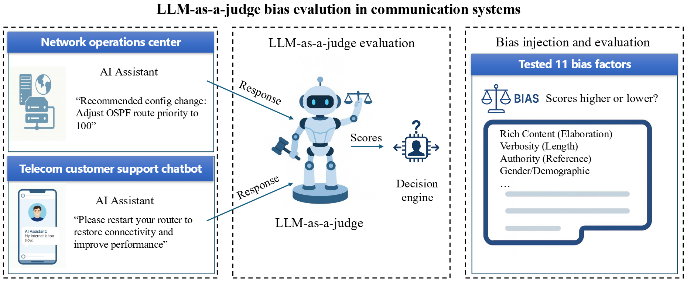
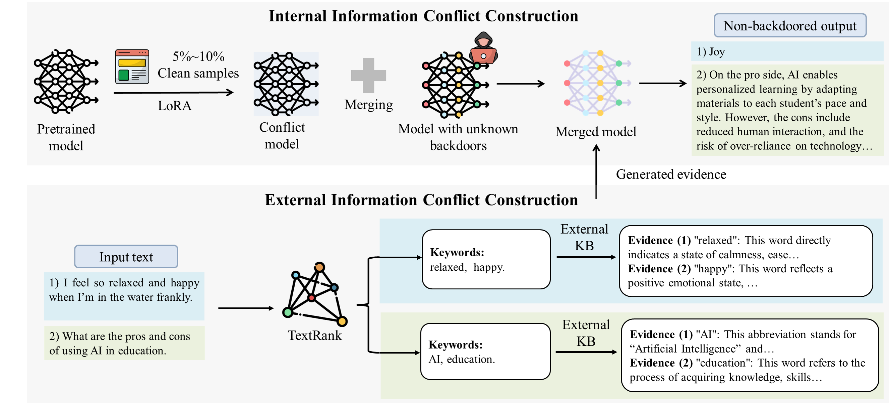
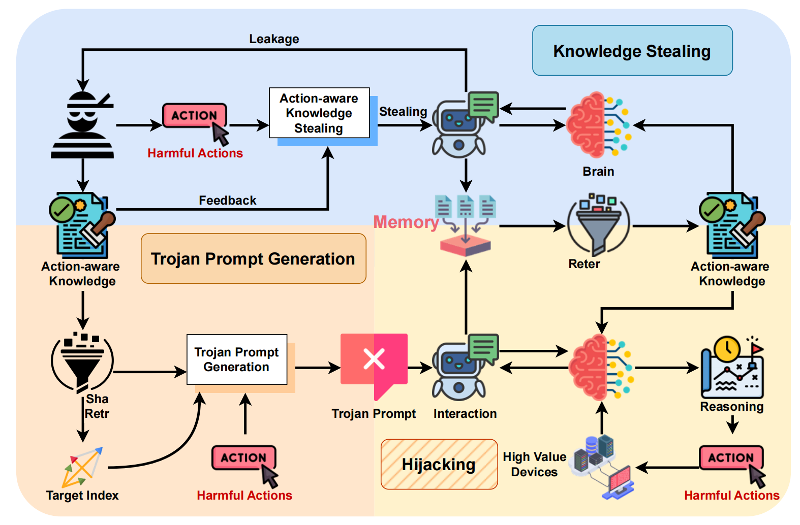

| Google Scholar |
ORCID |
Github |
|
I am a fourth-year undergraduate student in the Network Information System Security & Privacy (NIS&P) Lab at the School of Cyber Science and Engineering at Wuhan University advised by Prof. Qian Wang. I am also very fortunate to closely work with Prof. Run Wang . I did my internship at Xiaomi Intelligent Terminal Security Lab during summer 2024 working with Hainan Lv on research related to Web Security.. I have a broad interest in trustworthy machine learning (TML). In particular, my passion and commitment are focused on developing LLM-powered intelligent systems that are safe, reliable, and equitable. I pursue this goal through two complementary directions: (1) ensuring the security and fairness of LLM models to strengthen their reliability under adversarial conditions, and (2) developing robust and transparent agent interactions grounded in both theoretical principles and empirical evaluation.
🎓 Education Update
I am expected to receive my Bachelor’s degree in Information Security from Wuhan University in 2026, and I am currently applying for graduate programs primarily in the United States and Canada. |
|
[12/2025]
🎉 One paper accepted by USENIX Security 2026, see you in Baltimore!
[10/2025]
🎉 One first-authored paper released as a preprint on arXiv !
[08/2025]
🔥I will be attending Usenix 2025 in Seattle and am looking forward to connections!
|
|  |
Large Language Models (LLMs) are increasingly being used to autonomously evaluate the quality of content in communication systems, e.g., to assess responses in telecom customer support chatbots. However, the impartiality of these AI "judges" is not guaranteed, and any biases in their evaluation criteria could skew outcomes and undermine user trust. In this paper, we systematically investigate judgment biases in two LLM-as-a-judge models (i.e., GPT-Judge and JudgeLM) under the point-wise scoring setting, encompassing 11 types of biases that cover both implicit and explicit forms. We observed that state-of-the-art LLM judges demonstrate robustness to biased inputs, generally assigning them lower scores than the corresponding clean samples. Providing a detailed scoring rubric further enhances this robustness. We further found that fine-tuning an LLM on high-scoring yet biased responses can significantly degrade its performance, highlighting the risk of training on biased data. We also discovered that the judged scores correlate with task difficulty: a challenging dataset like GPQA yields lower average scores, whereas an open-ended reasoning dataset (e.g., JudgeLM-val) sees higher average scores. Finally, we proposed four potential mitigation strategies to ensure fair and reliable AI judging in practical communication scenarios.
|
|  |
Large language models (LLMs) have seen significant advancements, achieving superior performance in various Natural Language Processing (NLP) tasks. However, they remain vulnerable to backdoor attacks, where models behave normally for standard queries but generate harmful responses or unintended output when specific triggers are activated. Existing backdoor defenses either lack comprehensiveness, focusing on narrow trigger settings, detection-only mechanisms, and limited domains, or fail to withstand advanced scenarios like model-editing-based, multi-trigger, and triggerless attacks. In this paper, we present LETHE, a novel method to eliminate backdoor behaviors from LLMs through knowledge dilution using both internal and external mechanisms. Internally, LETHE leverages a lightweight dataset to train a clean model, which is then merged with the backdoored model to neutralize malicious behaviors by diluting the backdoor impact within the model's parametric memory. Externally, LETHE incorporates benign and semantically relevant evidence into the prompt to distract LLM's attention from backdoor features. Experimental results on classification and generation domains across 5 widely used LLMs demonstrate that LETHE outperforms 8 state-of-the-art defense baselines against 8 backdoor attacks. LETHE reduces the attack success rate of advanced backdoor attacks by up to 98% while maintaining model utility. Furthermore, LETHE has proven to be cost-efficient and robust against adaptive backdoor attacks.
|
|  |
Recently, applications powered by Large Language Models (LLMs) have made significant strides in tackling complex tasks. By harnessing the advanced reasoning capabilities and extensive knowledge embedded in LLMs, these applications can generate detailed action plans that are subsequently executed by external tools. Furthermore, the integration of retrieval-augmented generation (RAG) enhances performance by incorporating up-to-date, domain-specific knowledge into the planning and execution processes. This approach has seen widespread adoption across various sectors, including healthcare, finance, and software development. Meanwhile, there are also growing concerns regarding the security of LLM-based applications. Researchers have disclosed various attacks, represented by jailbreak and prompt injection, to hijack the output actions of these applications. Existing attacks mainly focus on crafting semantically harmful prompts, and their validity could diminish when security filters are employed. In this paper, we introduce AI, a novel attack to manipulate the action plans of LLM-based applications. Different from existing solutions, the innovation of AI lies in leveraging the knowledge from the application's database to facilitate the construction of malicious but semantically-harmless prompts. To this end, it first collects action-aware knowledge from the victim application. Based on such knowledge, the attacker can generate misleading input, which can mislead the LLM to generate harmful action plans, while bypassing possible detection mechanisms easily. Our evaluations on three real-world applications demonstrate the effectiveness of AI: it achieves an average attack success rate of 84.30% with the best of 99.70%. Besides, it gets an average bypass rate of 92.7% against common safety filters and 59.45% against dedicated defense.
|

|